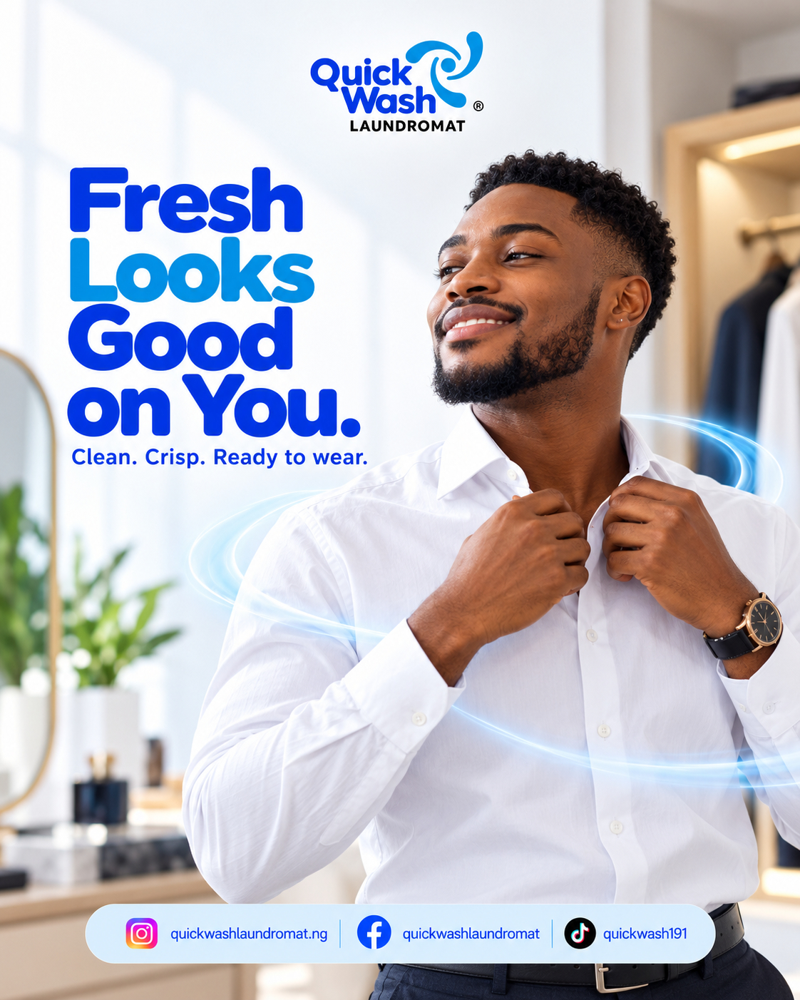
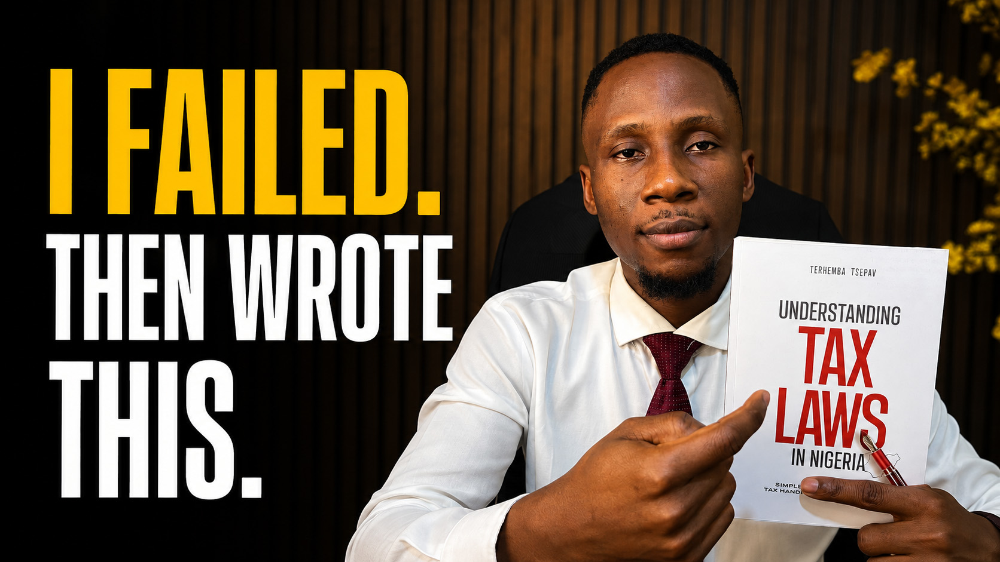

VIDEO · DESIGN · VISIBILITY
Make your
value visible.
Great stories deserve to be seen. I turn ideas into videos, visuals, and content that help brands and people communicate their value.


TO THE LAST IMPRESSION.
01 / SELECTED WORK
Good ideas.
Made tangible.
From a quick scroll to a longer story.
A selection of videos and visual projects.
02 / HOW I CAN HELP
Your vision.
My creative toolkit.
One project or ongoing support.
Let’s find the right fit for your goals.
01Video editing & production
↗
Purposeful pacing, clear storytelling, and thoughtful finishing for long-form YouTube content, educational videos, promotional edits, and short-form social content.
Discuss a video project ↗02Graphic design
↗
Visuals that give your message a clear focus, from social media campaigns and promotional flyers to YouTube thumbnails.
Discuss a design project ↗03Social media management
↗
Content planning, creative development, scheduling, and publishing support to help your brand show up consistently.
Plan ongoing support ↗04CV creation & editing
↗
Communicate your experience, transferable skills, and professional value with a focused CV built around your next opportunity.
Discuss your CV ↗05UGC & brand collaborations
↗
Open to creating content for brands and discussing sponsored collaborations. Share your product, audience, and campaign brief so we can explore a fit.
Start a collaboration ↗BETTER TOGETHER
Need the whole content package?
Combine video editing, graphics, and social media support in a custom monthly package, scoped around your needs.
03 / THE PERSON BEHIND THE WORK
Hi, I’m Akoji.
I connect the dots.
I’m Akoji Paul, the creative behind Akoji Creates. With a background in Theatre Arts and freelance digital media experience since 2022, storytelling sits at the centre of my work.
I bring video editing, design, and content strategy together to help brands and professionals communicate clearly. Whether it’s a brand campaign or a professional’s next career move, I start with the same question: what needs to be understood?
Tell me your story ↗04 / LET’S MAKE IT HAPPEN
Something
in mind?
Let’s create.
Tell me what you’re working on. I’ll help you shape the right creative approach and a quote for the scope.
contactakojicreates@gmail.com ↗WhatsApp · +234 816 760 9597 ↗